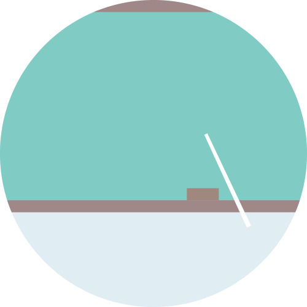

Apresentação
Trata-se de um projeto coordenado pela Universidade Federal do Piauí (UFPI)/Centro de Ciências da Saúde (CCS)/Departamento de Nutrição DN), aprovado pelo Conselho Nacional de Desenvolvimento Científico (CNPq), tendo como órgão financiador o Ministério da Saúde -DPAE/CGAN e conta ainda com o apoio de instituições parceiras como a Secretaria Estadual de Saúde do Estado do Piauí – SESAPI e Secretarias Municipais de Saúde dos municípios participantes. Considerando o avanço cada vez mais precoce da obesidade no Brasil e que esta representa fator de risco de impacto para o desenvolvimento de morbidades importantes para a saúde pública, o estudo tem como objetivo desenvolver atividades de pesquisa, extensão e formação na Atenção Básica de Saúde no âmbito do Sistema Único de Saúde (SUS) no Piauí, o qual será desenvolvido com base em quatro eixos de pesquisa, a saber:
Eixo I – Pesquisa e desenvolvimento;
Eixo II- Formação;
Eixo III- Avaliação e monitoramento;
Eixo IV- Difusão científica.
O projeto terá como área de abrangência, 102 municípios piauienses dos 11 territórios de desenvolvimento do estado, durante o período de 24 meses o que possibilitará a capacitação de 324 profissionais atuantes na Atenção Básica, preferencialmente nutricionista e educador físico e 124 gestores municipais que atuam no enfrentamento e controle da obesidade no SUS, além de beneficiar indiretamente o público atendido pelos profissionais capacitados, estimado em 144.346 pessoas.
Objetivo
Desenvolver atividades de pesquisa, extensão e formação de gestores e profissionais do NASF no Piauí;
Eixos
Pesquisa e desenvolvimento |
Objetiva realizar o diagnóstico sobre a organização da atenção nutricional e da gestão das ações de alimentação e nutrição nos municípios selecionados por meio de um instrumento pré-elaborado pelo Ministério da Saúde, composto por questionário eletrônico semiestruturado e auto-aplicável, direcionados aos gestores e profissionais de saúde atuantes na área de interesse da pesquisa. Após a obtenção desse diagnóstico, serão realizadas formações com os profissionais por meio de oficinas presenciais e dispersão. Para os profissionais de saúde serão realizadas três oficinas presenciais de 20 horas e duas para gestores. |
|

Formação |
Tem como objetivo desenvolver oficinas de formação com gestores e atores da Atenção Básica de Saúde na temática de prevenção, diagnóstico e tratamento da obesidade, no âmbito da Atenção Básica. Serão desenvolvidas e aplicadas estratégias efetivas e inovadoras de implementação de guias, protocolos e outros instrumentos de promoção da alimentação adequada e saudável e de prevenção e controle da obesidade, propostos pelo Ministério da Saúde. |
Avaliação e monitoramento |
Objetiva apoiar a Secretaria Estadual de Saúde (SES), municípios e territórios no planejamento, monitoramento e avaliação das ações e programas estratégicos de alimentação e nutrição, para o enfrentamento e controle da obesidade por meio de consultas nos sistemas de informação (SISVAN e e-SUS) e, após finalização do projeto, mediante visitas periódicas às secretarias municipais, UBS/NASF, pela SES para aplicação de instrumentos que contemplem os objetivos e metas propostas pelo Ministério da Saúde e Secretarias, estadual e municipais, junto às respectivas UBS/NASFs. Tal etapa contribuirá para a análise, revisão e proposições de ações para o controle permanente da obesidade, com fins de redução da sua prevalência, bem como a gestão da PNAN. |
Difusão científica |
Essa etapa tem como objetivo divulgar os resultados do estudo em cada etapa do projeto, de maneira transversal aos eixos de Pesquisa e Desenvolvimento, Formação, Avaliação e Monitoramento, por meio de defesas de teses, dissertações, trabalho de conclusão de curso, iniciação científica, apresentação de resumos em eventos científicos, publicação de manuscritos em periódicos qualificados, redes sociais e sites oficiais dos municípios, do estado, da UFPI, Pós-Graduação (PPGAN) e CECANE-UFPI. |